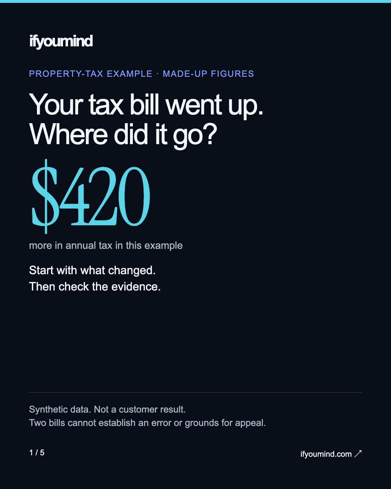
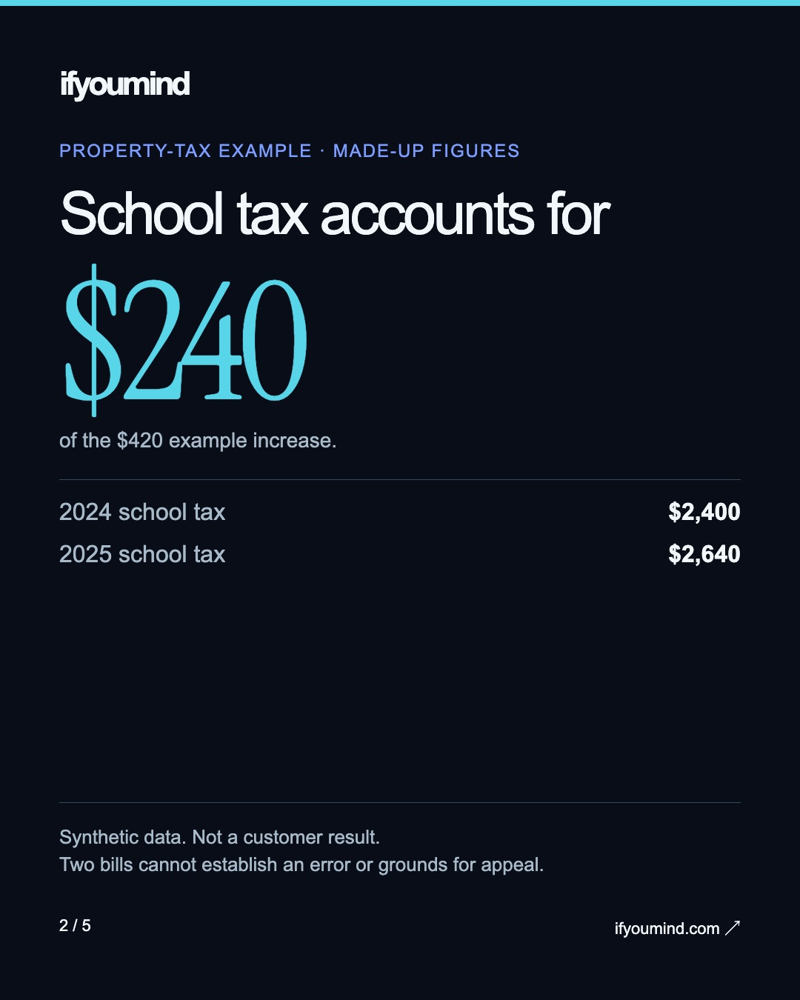
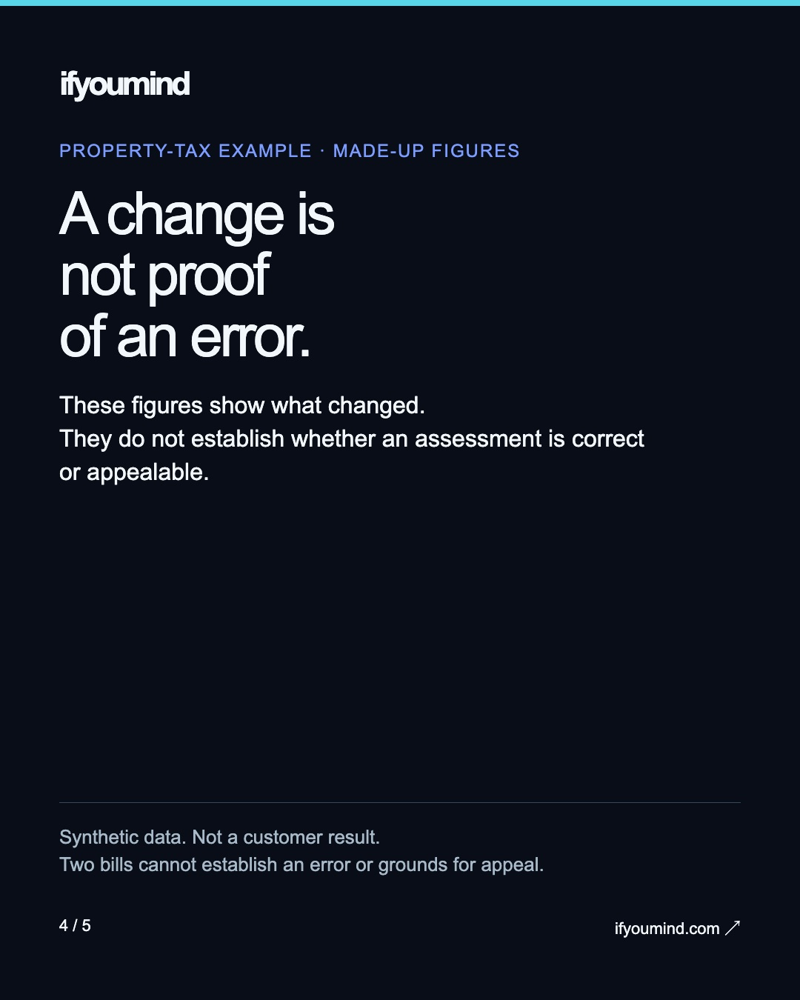
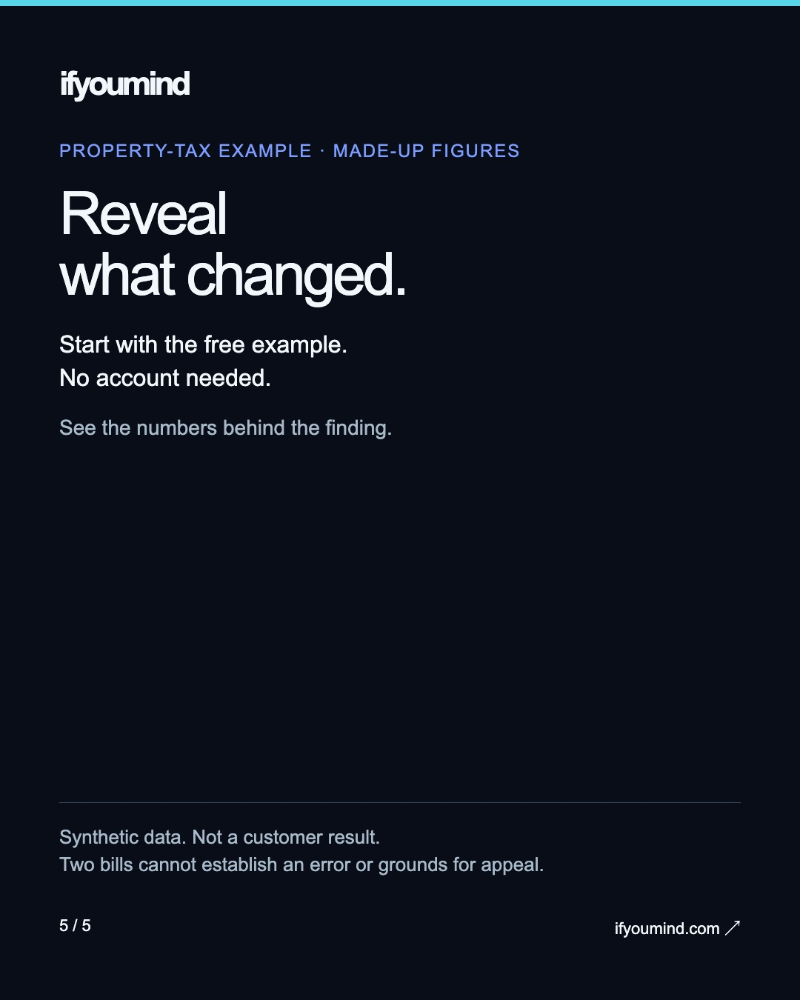

Your tax bill went up.
Follow the increase. Check the arithmetic.
Check the arithmetic.
Know the limit.
Try it for yourself.Not published or included in production assets. All figures are made up; calculations reuse the live example fixture.

Your tax bill went up.
Follow the increase.Check the arithmetic.
Know the limit.
Try it for yourself.